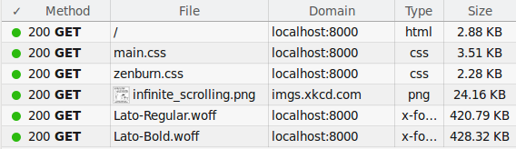

Look ma, no stock theme!
2023 Update: I just realized that em dashes in certain default sans-serif fonts look terrible (no space around the dash), so I now explicitly use Source Sans Pro and Ubuntu Mono. Using specific fonts allow me to fine-tune my typography again (e.g. making code block text a bit smaller).
The extra http load is not that bad: each woff2 font variant averages at 50KB, and is only loaded if a page’s content actually calls for it. A particularly bad case loads 6 variants, clocking in at ~300KB. I can live with that.
I also took this chance to go full black-on-white, which I think looks way crisper than black-on-cornsilk.
2020 Update: I bit the bullet and removed all web fonts, relying on the browser’s configured sans-serif/monospace fonts instead. It’s probably fine, since even stock fonts seem to cover Vietnamese glyphs well these days. Otherwise, people who care enough to be bothered by fallback fonts are likely to know how to configure their browser with proper fonts anyway.
2017 Update: Now that I like high contrast more, I just updated the theme to a black/white/red palette with a high-quality serif font instead. Thanks Mr. Butterick!
The original post follows.
I just redesigned my blog.
To be totally honest, the previous design was not mine at all. I’ve always been using pelican-octopress-theme, which is a Pelican port of the default theme for Octopress. It’s not that I have anything to complain about that theme: it was clean, readable and easy on the eyes. I just want my site to look unique. Content is king, sure, but it wouldn’t hurt to stand out from the crowd once in a while.
I’m not a professional designer, but everything turned out quite well if I could say so. In this post I’ll explain my design goals and how I (hopefully) achieved them.
Clean and lightweight
The web is messy. I’m not talking blinking-marquee-fire-animated-header messy (thank god we’re done with that… or are we?). I’m talking megabytes-of-useless-javascript-and-css messy. For whatever reason, some people now think it’s cool to include Bootstrap/Foundation to every project, or to include that new shiny parallax library to ruin scrolling for everybody. Oh, and don’t forget the marvellous invention that is “infinite scrolling”:

In fact, the main motivation of my new theme is this satire page on the sad state of the web we’re in today.
That’s why I decided to do no fancy cosmetic JS and try to keep my use of static assets to a minimum:

I guess there’s nothing I can do about the font files though, since I need to make sure my Vietnamese posts are rendered in a font that supports it. Oh well, at least it looks awesome.
Content is king
No more distracting sidebar with “latest news”, “related posts”, etc. with thumbnails popping up all over the place, just a good old article body from start to finish.
Easy on the eye
While bettermotherfuckingwebsite does a good job at demonstrating how far you can go with a few simple CSS rules (hint: very far), I found Tommi Kaikkonen’s Interactive Guide to Blog Typography much more comprehensive and informative. I implemented many of the ideas found in that guide:
- Big body font
- Constrained line width to aid reading
- Generous line height, liberal whitespace to help with visual hierarchy
- Lower background-foreground contrast. I also find the slightly yellow-ish background somewhat soothing.
That’s it!
You can find the source code to my theme on GitHub. I don’t recommend using it as-is though, since I haven’t implemented many required templates (authors, tags, categories, etc.) because I don’t use them. There’s also the hardcoded content in footer and probably a few more places. Maybe someday I’ll stop being lazy and fix all that. Maybe.